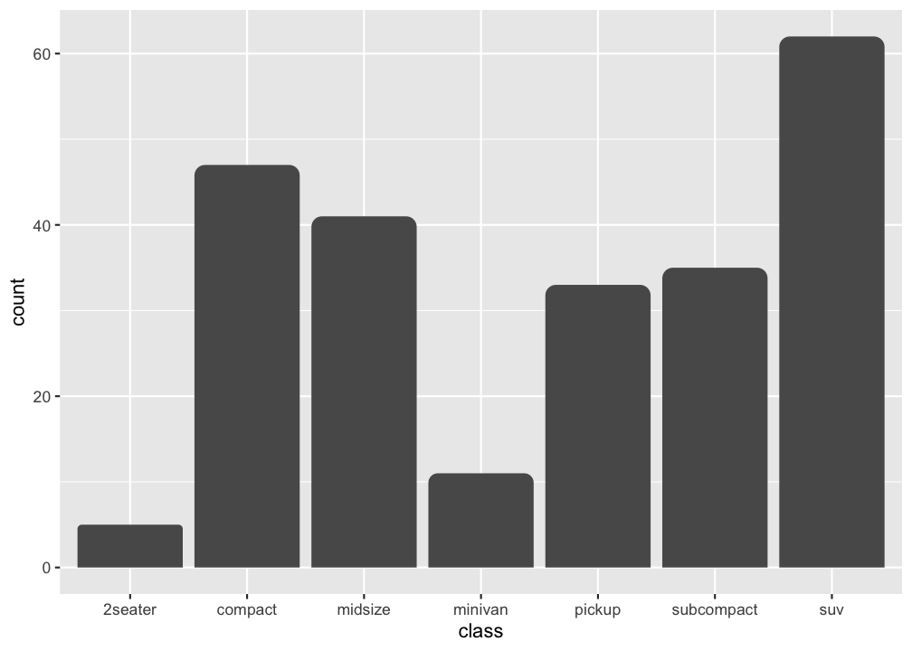
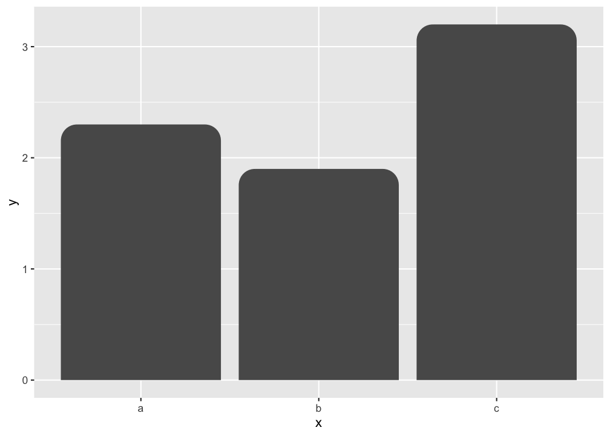
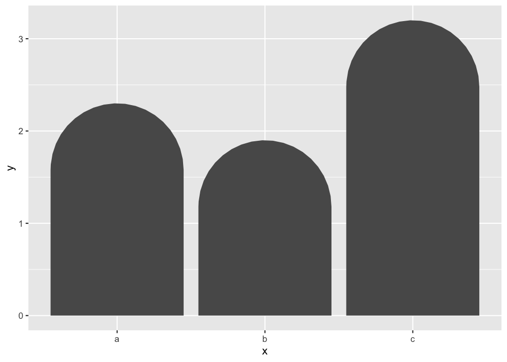
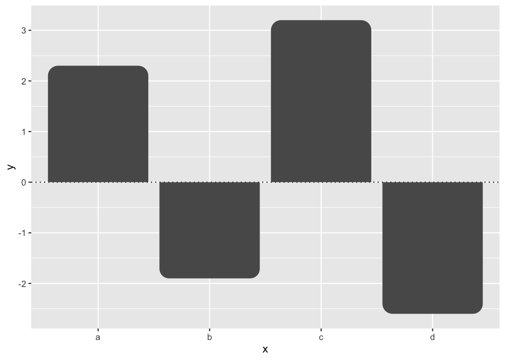

ggrounded creates bar plots with rounded corners using ggplot2.
Installation
Install the released version of ggrounded from CRAN:
install.packages("ggrounded")Or install the development version from GitHub with:
# install.packages("pak")
pak::pak("botan/ggrounded")Usage
There are two types of bar charts in ggplot2: geom_bar() and geom_col(). geom_bar_rounded() and geom_col_rounded() are wrappers on them for rounding the top corners. geom_bar_rounded() makes the height of the bar proportional to the number of cases in each group (or if the weight aesthetic is supplied, the sum of the weights).
The radius argument is a normalized value between 0 and 1. Use 0 for square corners and 1 for the maximum rounding that each bar can safely support based on its own width and height.

If you want the heights of the bars to represent values in the data, use geom_col_rounded() instead.
ggplot(data.frame(x = letters[1:3], y = c(2.3, 1.9, 3.2)), aes(x, y)) +
geom_col_rounded()
Use larger radius values when you want a more pronounced rounded top:
ggplot(data.frame(x = letters[1:3], y = c(2.3, 1.9, 3.2)), aes(x, y)) +
geom_col_rounded(radius = 1)
Negative values are supported too. Bars above zero keep rounded top corners, while bars below zero round away from the baseline:
ggplot(data.frame(x = letters[1:4], y = c(2.3, -1.9, 3.2, -2.6)), aes(x, y)) +
geom_hline(yintercept = 0, linetype = "dotted") +
geom_col_rounded()
Code of Conduct
Please note that the ggrounded is released with a contributor code of conduct. By contributing in this project you agree to abide by its terms.